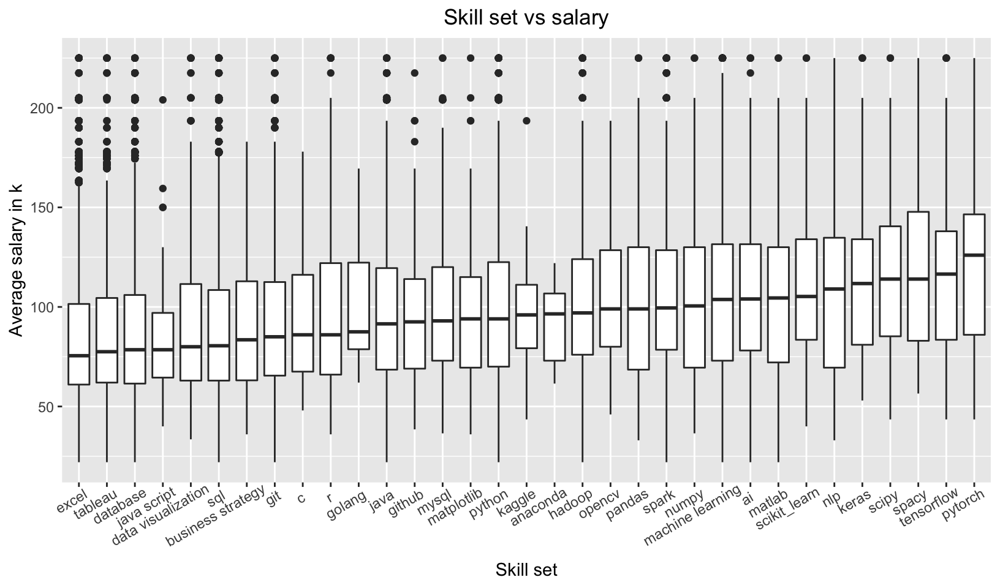
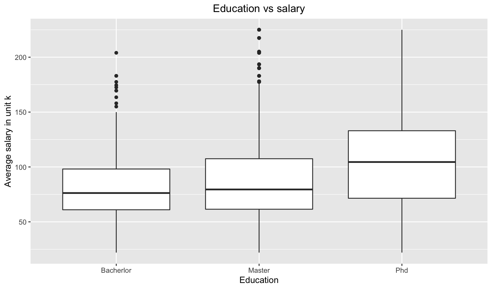
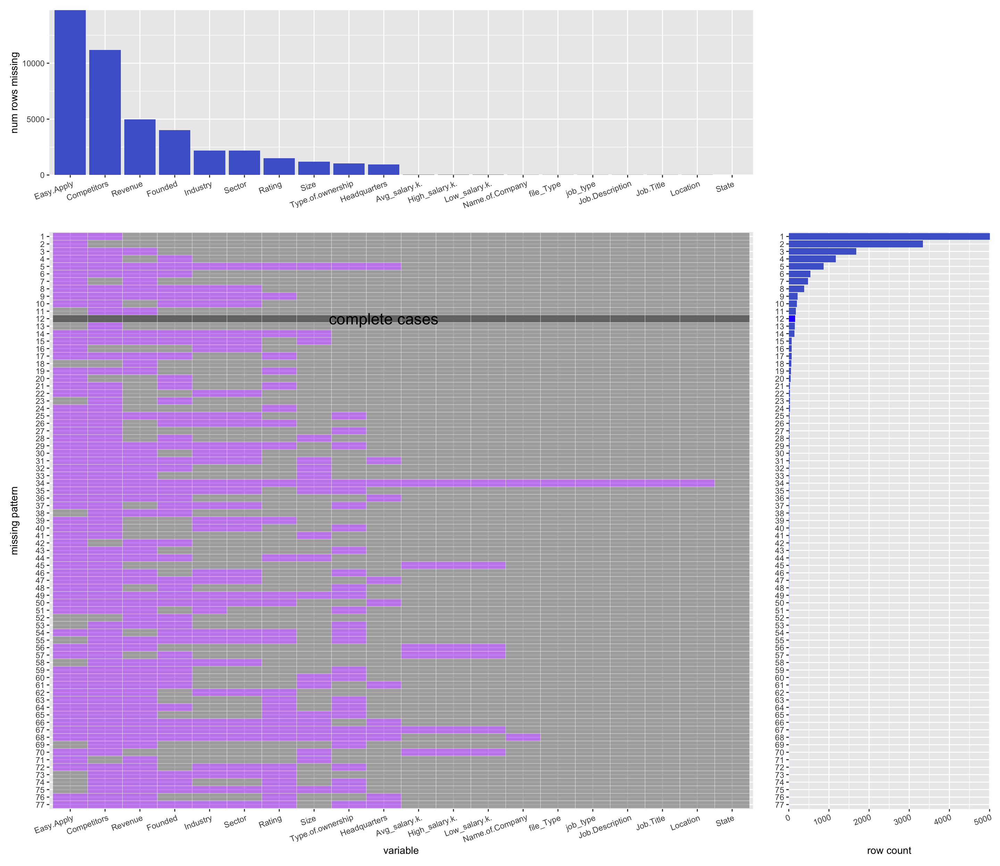
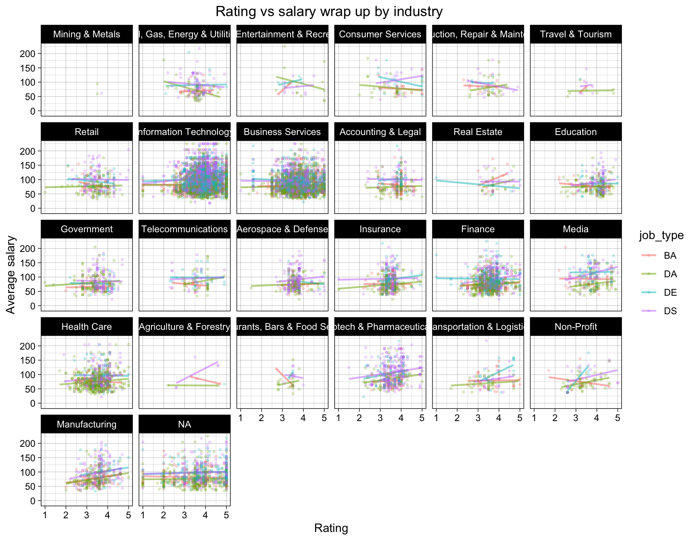
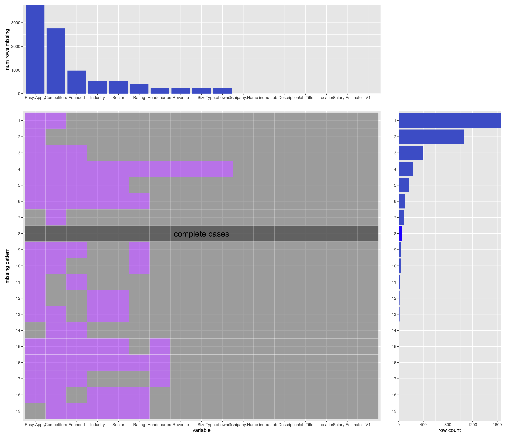
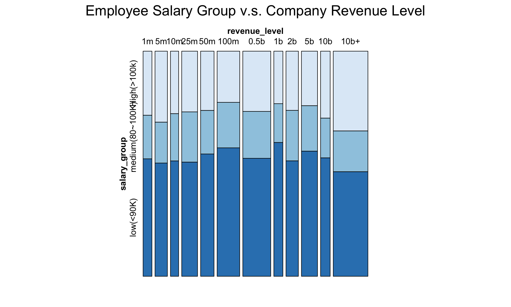

Chapter 5 Results
5.1 wordcloud for skillset
5.1.1 Box plot for skillset vs salary

We want to analyze the relationship between skill set and the salary. If we want to get a high salary, what skill do we need to master?
We extract the words about the skill set and take the median of every job that includes the specific words. The boxplot ranks the skills by the median salary. From the graph, we can know that the most paid skills are pytorch, tensorflow and spacy, which are skills about machine learning and natural language processing. It means that if we want to get a high paid job, we need to master the skills of the machine learning. Some skills like excel, database and data visualization appeared frequently in the job description but the median of the job salary including these skills is low. It means that the skills like excel are base skills which are required by most of the jobs. But mastering these skills doesn’t mean getting a high paid job.
5.2 salary vs job title

5.3 Education level vs salary

5.4 Ridge line plot for sector vs salary

5.5 Hex plot for founded year vs salary hex plot

5.6 Cleveland dot plot for Company vs salary

5.7 Glassdoor rating vs salary, wrap by Industry

We want to analyze the relationship between rating and salary. In different industry, does high rating company always pay high salary? The rating comes from the users in the Glassdoor.
We draw the scatter plot of rating and salary. Every graph represents a job industry, and every color represents a job title.
In most of the graphs, rating and salary has a slightly positive correlation, excluding the industries that has few data related jobs. However, some industries have a different situation. For example, in the Real Estate industry, the higher the rating is, the lower the salary is. The reason of this situation may be about our data collection. Glassdoor is a website that everyone can rate and write comments. So, the data is not very authentic. And we can see that different job titles can influence the relationship between rating and salary. For example, in the finance industry, the Data Engineer job salary has a negative correlation with rating but the other three job salary has a slightly positive correlation.
So, we come to a conclusion that in the most situation, the high rating comes with a high salary.
5.8 Alluvial plot (Sector, Type of ownership, salary_group)

We want to analyze how the sector and the type of ownership influence the salary level as well as the relation of the sector and the type of ownership.
Alluvial plots are a form of sankey diagrams that are a great tool for exploring categorical data. They group categorical data into flows that can easily be traced in the diagram. So, we can show the relationship of the three section (“sector”, “type of ownership” and “salary”) clearly.
We divided the salary into three groups. If the average salary is larger than 100k dollars, we assume it is “high salary”. If it is less than 70k dollars, we assume it is “low salary”. Otherwise, we assume it is “medium salary”. Alluvial plot shows that the type of ownership of the company has little influence on the salary level. For some type of ownership that account for a small part, they always pay low level of salary. For some sector that account for a small part, most of them pay low level of salary. But Biotech & Pharmaceuticals companies pay high level of salary even they account for a small part. Most high-level paid jobs are in the Information Technology sector, because there are many jobs in the Information Technology companies. Most Business Service companies, and most Information Technology companies are private companies. But most Finance companies are private companies, and all the Biotech & Pharmaceuticals companies are public companies.
5.9 Employee Salary Group VS Company Revenue Level - Mosaic Plot
